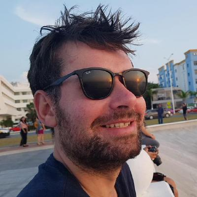

Software Developer
Développement et maintenance de briques logicielles critiques sur la plateforme cloud.
Bash, Linux, PHP, Symfony, Drupal, Docker, CI/CD, architecture
$ whoami
$ cat role.txt
Senior Backend Engineer & AI Agent Trainer [FR]
$ cat location.txt
Bordeaux, France █

$ uptime → 15+ ans en backendcat bio.md — Développeur backend senior avec plus de 15 ans d'expérience. Spécialisé en Drupal, Symfony et architectures backend scalables. Actuellement chez OVHcloud, je construis et maintiens des briques logicielles critiques pour le cloud européen.
Passionné par les agents IA : je crée des outils qui augmentent le quotidien des développeurs — Quorum, revue de code par consensus multi-LLM, ou l'automatisation des workflows avec les sub-agents Claude Code. J'explore l'intersection entre backend solide et IA pragmatique.
Je parle PHP, Symfony, Drupal, TypeScript, Bash et Linux au quotidien. DevOps, CI/CD, Docker et AWS complètent la stack.
$ Demandez-moi : PHP · Symfony · Drupal · Agents IA · DevOps
Développement et maintenance de briques logicielles critiques sur la plateforme cloud.
Bash, Linux, PHP, Symfony, Drupal, Docker, CI/CD, architecture
Mission en régie chez Atixnet. Mise en place d'une usine à sites Drupal sur AWS Elastic Beanstalk.
CI/CD avec GitLab CI, scripts de synchronisation Drupal, formations internes (Git, Docker, Drupal, AWS), développement Symfony 4.
Ateliers de conception, spécifications techniques, audits et accompagnement d'équipes de développement.
Références : keolis.com, mitsubishielectric.fr, happ-e.fr, ecophytopic.fr — Drupal, PHP, Linux, Bash.
Analyse du besoin, conception Drupal, mises en production et maintenance évolutive de projets web.
Références : cidj.com, siredwards.fr — PHP, Drupal, Linux, Bash.
Développeur back-end PHP sur e-sante.fr (5M+ visiteurs/mois). Migration Drupal 6 → 8.
Drupal, Drupal Commerce, cahiers des charges, spécifications, audit SEO.
$ ls ~/skills — Ma stack de compétences pour les agents IA : 30 skills installés depuis skills.sh, portés par Matt Pocock et Superpowers. Manifeste versionné dans S1933/skills.
Je suis toujours ouvert aux échanges sur le développement, l'IA, les outils open source et les nouvelles opportunités.